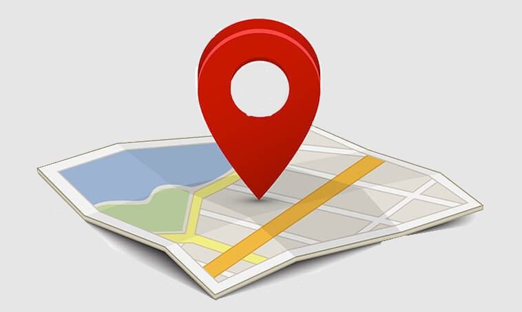
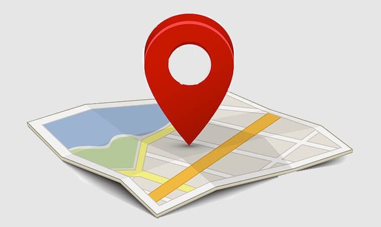

Prizreni
 

Prizreni (në tekste edhe Prizrend, serbisht: Призрен ) është qytet në pjesën jug-perëndimore të Kosovës si dhe i dyti në Kosovë për nga madhësia dhe popullsia pas Prishtinës. Prizreni po ashtu është qendër e komunës
dhe rajonit me të njëjtin emër. Qyteti ka një popullsi prej rreth 170,000 banorësh, shumica Shqiptarë. Komuna mendohet të ketë rreth 221,000 banorë, përfshi këtu vetë qytetin dhe 76 fshatrat që e përbëjnë. Gjindet në
afërsi të Bjeshkëve të Sharrit në Kosovën jugore, rajoni kufizohet me Shqipërinë dhe Maqedoninë. Qyteti i Prizrenit shtrihet ne pjesën jugore të Rrafshit të Dukagjinit, në rrugën që lidhte me parë bregdetin verior të
tokave shqiptare dhe qendrat e tij qytetaro-tregtare me rajonet e brendshme të Kosovës dhe të Ballkanit.
Prizreni në ditët e sotme ka më shumë se 177 000 banorë. Në vitin 1836 kishte rreth 26 000 banorë. Popullsia u rrit në 1875-ën, kur arriti në 40 000 banorë, me mbi 80% shqiptarë, më pak se 15% serbë e rreth 5% vllehë.
Sot popullsia e Prizrenit përbëhet nga një shumicë prej më shumë se 90% shqiptarë, e pjesa e mbetur nga goranë, torbeshë, romë e shumë pak serbë e turqfolës.[2]
Objekte turistike dhe kulturore
Kalaja e Prizrenit
Kalaja e Prizrenit është një monument
i trashëgimisë kulturore në Prizren,
Kosovë[1], konsiderohet të jetë simboli
i qytetit dhe një element me rëndësi në
identitetin kulturor të Kosovës. E ndërtuar
në një kodër të lartë, në një ambient
piktoresk dhe në një pozitë jashtëzakonisht
strategjike, Kalaja ngrihet mbi qytet sikurse
edhe mbi luginën e thellë të Lumëbardhit dhe
rrafshin e Dukagjinit. Kalaja i ka fillet e
saj në periudhën e parë të qytetërimit të
këtij rajoni, në parahistori, me një zhvillim
të vazhdueshëm në periudhën Bizantine dhe Osmane.
Është përdorur ekskluzivisht si kala deri më
1912. Kalaja tani është dukshëm e dëmtuar dhe
është në listën e vendeve të World Heritage
in Danger (Trashëgimia e botës në rrezik).
Një rrugicë nga qendra e qytetit të shpie
në kala, zgjat rreth 15 minuta ecje në këmbë,
dhe ju mund të kënaqeni me pamjen e plotë të
qytetit, të fotografoni apo thjesht të shikoni
diellin duke perënduar.
Ura e Gurit
Teatrit Kombëtar i Kosovës është
themeluar në tetor 1946, në Prizren.
Ai së pari, ishte me emrin "Teatri
Popullore Rajonal" pastaj "Teatri
Popullore Provincial" deri në vitin
1999, kur ajo në fund u ndryshua në
"Teatri Kombëtar i Kosovës". Ky ishte
institucioni i parë profesionale
teatror në Kosovë pas Luftës së Dytë
Botërore. Disa muaj pas themelimit,
teatri u zhvendos në Prishtinë.
Shfaqjet e para të teatrit ishin
kryesisht të krijuara nga artistë
amator, të talentuar dhe entuziast
idealistë të cilët ndihmoheshin
artistë profesionistë nga teatro të
tjera të ish-Jugosllavisë. Në vitet
1960, ansambli i teatrit ngadalë ishvte
pasuruar me
staf profesional.
Muzeu dhe Kompleksi i Lidhjes Shqiptare të Prizrenit
Kompleksi i Lidhjes së Prizrenit vazhdon
në mbetet një nga vendet që të gjithë duan
ta vizitojnë për arsye të shumta, disa prej
tyre nuk kanë pasur rastin më herët kurse
të tjerët e sidomos mërgimtarët i sjellin
fëmijët me qëllim që ata të kenë rastin për
tu njohur me historinë dhe traditën shqiptare.
Lokacioni është shumë lehtë për tu gjetur pasi
që ndodhet në distancë ecje nga sheshi Shadërvan.
Kompleksi i Lidhjes së Prizrenit vazhdon
në mbetet një nga vendet që të gjithë duan
ta vizitojnë për arsye të shumta, disa prej
tyre nuk kanë pasur rastin më herët kurse
të tjerët e sidomos mërgimtarët i sjellin
fëmijët me qëllim që ata të kenë rastin për
tu njohur me historinë dhe traditën shqiptare.
Lokacioni është shumë lehtë për tu gjetur pasi
që ndodhet në distancë ecje nga sheshi Shadërvan